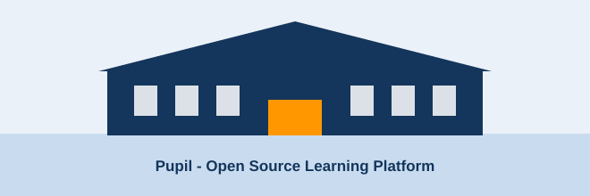

About The Program

How It Started
In a group of final year students noticed the same thing every year: juniors were following scattered, half-finished tutorials with no idea what to study next, while the good material was already published openly by people who knew the subject.
So they opened a lab, arranged that open material into a semester plan, and started running it as a proper program. That is all Pupil is — a well organised, openly maintained reading list with a teacher sitting next to you.
Our Mission
The best computer science material is already out in the open. Our job is to arrange it into an order that makes sense, teach it, and keep the whole curriculum open so anyone can improve it.
What “Open Source” Means Here
| A Closed Course | Pupil | |
|---|---|---|
| Syllabus | Fixed, and you see it after joining | Public, on this site, before you join |
| Material | Locked inside an app | Public links you keep forever |
| Access after the course ends | Usually expires | The links keep working |
| Updates | Next batch, next year | Whenever the community updates the source |
| Corrections | Raise a ticket and wait | Send a fix and it goes into the next update |
| Proof of learning | A PDF certificate | A public repository of your own work |
Faculty And Student Coordinators
| Name | Role | Track | Open Lab Day |
|---|---|---|---|
| Dr. Anita Verma | Head, Computer Science | Program lead | Monday |
| Prof. Rakesh Kumar | Assistant Professor | DSA, System Design | Tuesday |
| Prof. Meena Joshi | Assistant Professor | AI / Machine Learning | Wednesday |
| Bhavya Singh | Student Coordinator | Web Development | Thursday |
| Arjun Nair | Student Coordinator | DevOps, Cloud Computing | Friday |
Program Numbers
- Tracks running: 6
- Modules across all tracks: 36
- Students enrolled this semester: 640
- Open source links curated: 150+
- Contributions merged from students: 90+
Licensing And Credit
The pages of this website are written and maintained in the open, and the syllabus is ours to share. The learning material they point to belongs to its original authors — W3Schools, GeeksforGeeks, the Stack Overflow community, takeUforward, MDN and the maintainers of every open source project we link to.
We link to those sources instead of copying them, which is the honest way to run an open program.
Frequently Asked Questions
What exactly is open source about this?
The syllabus, the module order, the notes and the code of this website are all public and open to contributions. “Open source” describes how the curriculum is built and maintained — it is not a claim about what anything costs.
Do I get a certificate?
The thing recruiters actually look at is the repository you build during the track, so that is what we help you make good.
Can students from other branches join?
Yes. Web Development, Cloud Computing and DSA are open to every branch and every year.
Can I take two tracks together?
Yes, and some pair well — DevOps with Cloud Computing, or DSA with System Design.
How do I contribute?
Fix an error in the notes, add a solved problem, or suggest a better free resource. Send it through the contact form and it goes into the next update.